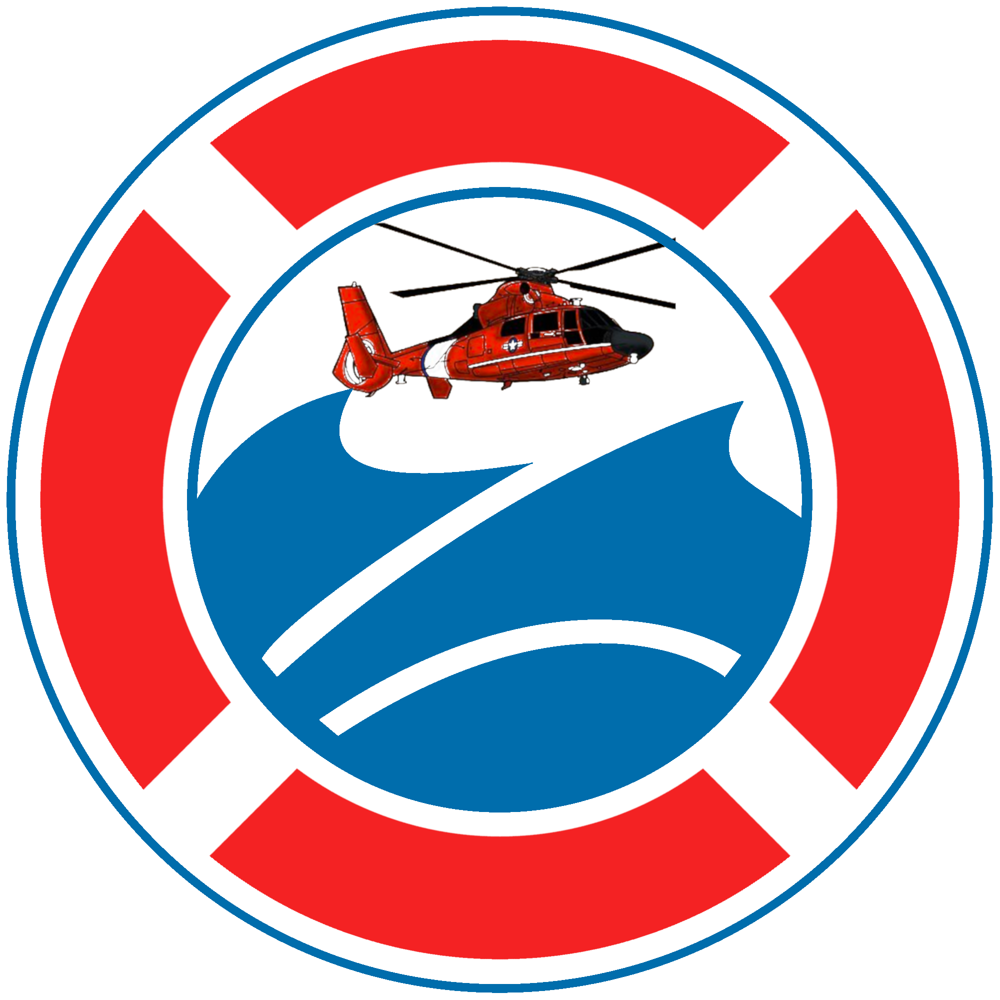
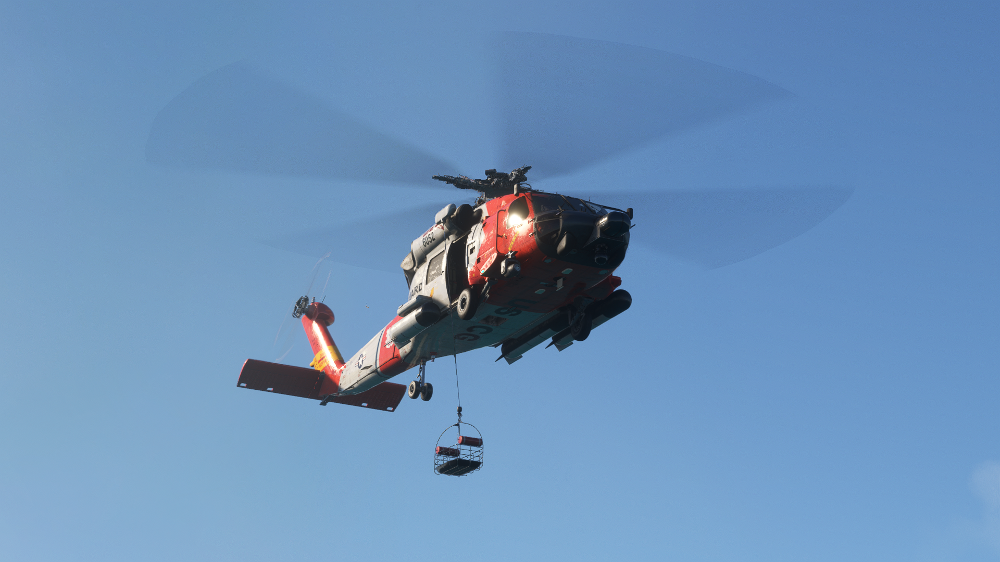
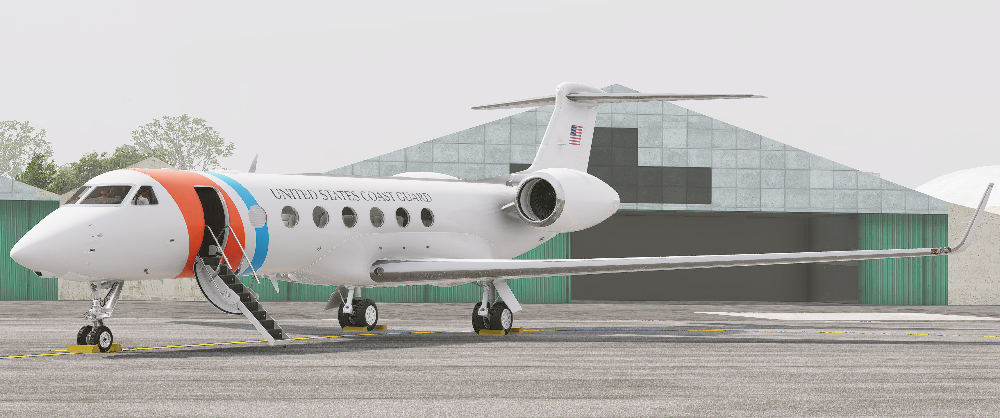
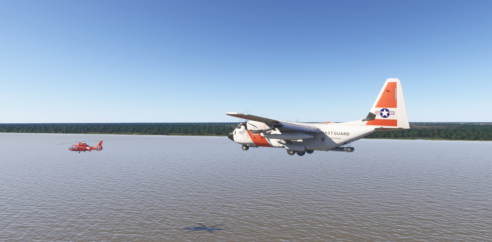

Welcome to the Virtual U.S. Coast Guard!
The Virtual USCG is a flight simulator community simulating the operations
of the real world U.S. Coast Guard's aviation operations! We welcome pilots of all experience
and interest levels to join our ranks and provide life saving support around the virtual skies!
How To Join:
Join VATSIM
VATSIM is the premier virtual network for flight simulator pilots. Simulating both pilot and air traffic control operations, all Virtual USCG flights are operated on VATSIM. Membership is free and simple to sign up for!
Take Me ThereRegister On Our Site
Registering on our site starts your career with the Virtual USCG. Once approved, pilots can access our crew portal and start flying. Links to training, procedures and more are available upon registration with us.
Sign Up HereJoin Our Discord
Discord is where the bulk of our operations happen. From training, to active missions; they all occur on our group comunications server. It is imperative that all pilots (and prospective members) join the server to get in touch.
Join NowTake a look at our Operations

Search & Rescue
vUSCG pilots work in coordination with ground units, sea patrols and air traffic control to help find and provide life-saving medical care to people in distress on any of the U.S. waterways or coastlines.

VIP Transport
Aircraft like the C-37A & C-37B Gulfstreams provide comfortable executive transportation. These aircraft travel around the world to support vUSCG and vDepartment of Homeland Security leadership.

Enviromental Patrol
vUSCG aircraft have special equipment making them crucial to preserving natural enviroments. From ice patrol to fishery observation to oil spill tracking; our fleet can do it all.